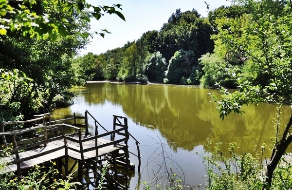

|
|
Görülecek Yerler
|
|
Karadeniz'in şirin kasabalarindan olan Amasra,
sakin bir tatil isteyenler için ideal bir mekan. Doğal güzelliklerinin yanı sıra, kalesi, müzesi ve Cenova şatosuyla tarihi bir tur da yapabilirsiniz.
Bursa'ya 34 km uzaklıktaki Uluabat Gölü,
yapısı itibariyle değişik türden yüzbinlerce su kuşuna beslenme ve barınma olanağı sağlıyor. Su içinde yaşayan canlılar için de zengin bir yapıya sahip gölde 21 çeşit balık bulunuyor.
Bir İç Anadolu şehrinde de sizi şaşırtacak şeyler olabilir.
Şehrin merkezinden geçen Yeşilırmak'ın kenarında sıralanan ve geleneksel Osmanlı evinin bütün özelliklerini bünyesinde taşıyan Amasya evleri bu şehri görmek için iyi bir neden. 
İzmir'in Efes harabeleriyle ünlü Selçuk ilçesinin
8 km doğusunda üzüm bağları, şeftali bahçeleri ve zeytinliklerle çevrili tarihi bir Rum köyü Şirince. Burada yapılan Şirince evleri de 19. yüzyıl Anadolu mimarisini yansıtıyor.

İstanbul'da yaşıyorsanız yakın yerlere kaçmak istersiniz.
İşte; tarihi Polonezköy, iki akarsu arasında kalan şirin mekan Ağva veya İstanbul Boğazı'nın Anadolu yakası Karadeniz girişinde yer alan Anadolu Feneri önerebileceğimiz mekanlar.
Bursa'ya 2 km. uzaklıktaki Cumalıkızık,
Orhangazi'nin Bursa'ya girmeden önce yaptırdığı köylerden biri. Osmanlı mimarisinin en güzel örneklerinin verildiği evlerden oluşan köye giderseniz, dar sokaklardan akan sular sizi karşılayacak.
Tatilde herkes farklı yerleri tercih eder.
Eğer kaplıca seçeneğinden yanaysanız, İnegöl'e 27 km uzaklıktaki Oylat Kaplıcaları'nı tercih edebilirsiniz. Orman içindeki mekan, size hem yeşilin en güzelini hem de şifalı sularını sunuyor.
Kaleköy'de Türkiye'nin en son günbatımını yaşamak,
Zeytinli'de dibek kahvesi içmek ve Hristo'nun tatlılarını yemek isterseniz Gökçeada'ya yelken açın. Rum köylerini tek tek gezin.
Tortum'a 35 km. uzaklıktaki şelale, 48 metrelik yüksekliği
ile Asya ve Avrupa'nın en büyük, dünyanın ise üçüncü büyüklükteki şelalesi olarak biliniyor.
Bir liman kenti olarak tarihi 4 bin yıla dayanan şehrin,
tercih edebileceğiniz çok farklı özellikleri bulunuyor. Örneğin, Sultaniye köyünde termal kaplıcalara gidebilir, Yayla köyü ve Gökçeova'da safari yapabilirsiniz. |